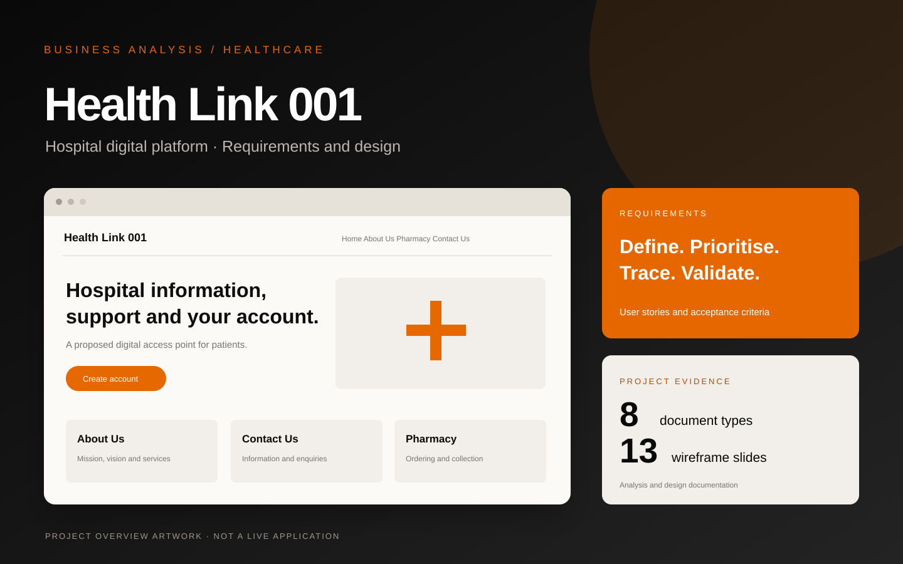

Understand the gap
Compare manual patient–hospital interactions with the intended digital service and identify the missing capabilities.
Featured case study / Healthcare
Defining patient journeys and requirements for a hospital’s proposed digital front door.

Health Link 001 project overview · Requirements and design.
The business problem
The project brief describes patients relying on visits, calls and manual enquiries to obtain hospital information and support.
Health Link 001 proposes a responsive digital platform where patients can manage an account, find hospital information and submit enquiries. The supporting design materials also explore the patient journey through pharmacy enquiries, ordering and collection.
The case study brings together the supplied analysis and design artefacts. It demonstrates how business needs were translated into documented requirements, testable scenarios and interface concepts.
Project focus: business analysis, requirements documentation and patient-journey design.
The analytical approach
Compare manual patient–hospital interactions with the intended digital service and identify the missing capabilities.
Define the MVP features, user needs and delivery requirements in a structured scope document.
Structure requirements into user stories, MoSCoW priorities and Given–When–Then acceptance criteria.
Use wireframes to explain the proposed journeys and connect requirements to stories and design decisions.
What the documentation covers
The requirements and design materials explore four patient-facing areas of the proposed digital platform.
Registration, email verification, sign-in, password reset and profile management, with validation and access-control scenarios.
Contact details, location, enquiries, callbacks, routing and acknowledgement, with clear separation from emergency or clinical support.
Mission, vision, services and organisational information, with content ownership and approval considerations.
Wireframes and user stories explore product information, prescription checks, payment where applicable and collection notifications.
A closer look
The requirements workbook connects business needs with user stories and clear acceptance criteria.
High-level requirements are broken into practical scenarios covering account access, enquiries, hospital information and pharmacy journeys. Given–When–Then acceptance criteria describe the expected behaviour for each scenario.
MoSCoW prioritisation and a traceability sheet help organise the work and show how individual stories relate to the wider project requirements.
Explore the requirements workbook ↓Project evidence / Downloads
Explore eight supporting deliverables. Download the editable documents individually or take the complete project pack.
High-level requirements, prioritised user stories, acceptance criteria and traceability.
Download XLSX ↓13 slides showing the proposed account, information, enquiry and pharmacy journeys.
Download PPTX ↓Product goals, target users, proposed measures, MVP features and future backlog.
Download DOCX ↓Current problems, capability gaps and the intended future state.
Download XLSX ↓Boundaries, assumptions, constraints, dependencies and approval requirements.
Download DOCX ↓Business justification, anticipated benefits, delivery risks and project controls.
Download DOCX ↓Strengths, weaknesses, opportunities and threats affecting the proposed MVP.
Download DOCX ↓Planned analysis, design, delivery support and handover activities.
Download DOCX ↓One ZIP containing the eight source deliverables.
The project pack includes the original analysis and design documents in editable formats.
Project context
This collaborative project brings together business justification, scope definition, requirements analysis and interface design. Geraldine is credited in the scope, business case, SWOT and product requirements materials.
The deliverables demonstrate how a business challenge can be translated into organised requirements, prioritised user stories and visual journeys that support development and testing.
Discuss a similar project
For requirements documentation, process analysis and business analysis opportunities.
Contact Geraldine ↗